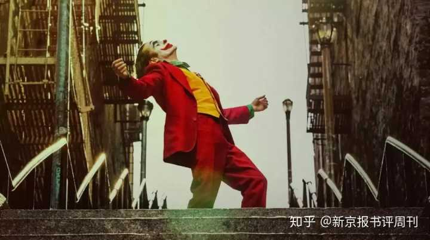

如何评价 2019 电影《小丑》？
作者：余雅琴 - 新京报书评周刊
按：原文名为《<小丑>反好莱坞吗？它只是“超级英雄”的另类版本》
尽管故事发生在1980年代初的美国，但小丑这个人物具有某种穿越时空的魔力，他的遭遇和反叛让喜欢这部电影的人在其身上找到了自己的身影，小丑以嘲弄的姿态对抗主流，因此一些评论者认为这是一部“反好莱坞”的电影。事实上，《小丑》依然是一部好莱坞主流电影。
我们已经无需去证明《小丑》的可贵之处，它很成功地揭示了时代病症，并极力准确地将美国乃至全球的社会结构性问题进行了艺术化的再现。小丑不仅作为一个电影人物出现，更作为一种隐喻存在。诚如齐泽克的所言，《小丑》可以被看作是人们对秩序本身的绝望。
但是这部电影打造出的时代icon“小丑”——所留下的并不是真正的解放，而是一场更大的无序的开始。电影提出了问题，却只给出了一个暧昧的开放性结局，由此引发的争议却在真实世界造成了巨大的舆论撕裂，这几乎可以被看做是一个讽刺。
《小丑》之所以能够获得如此广泛的认同，和该作品塑造了一个极为成功的角色“小丑”有关，这个名为亚瑟（Arthur）的精神疾病患者是一个绝对的社会边缘人物，他在贫困线上挣扎，照顾精神失常的母亲，努力以小丑演员的工作向世界报以微笑，但是他的种种努力以尊严和梦想不断被击碎为结局……该片的主演，同样有着破碎童年的方法派演员杰昆·菲尼克斯（Joaquin Phoenix）以无比精湛的演技将亚瑟的可悲和蜕变刻画出来，几乎树立了好莱坞表演的经典教程。电影如此大费周章地塑造人物，让这部电影比《寄生虫》更能获得共情和理解，如果说《寄生虫》被人记住的是事件，《小丑》被人记住的则是人物，这也是好莱坞电影的魅力所在，明星的价值被发挥到最大。

不论以多么严苛的标准来考量，《小丑》都可以说是制作精良，结构考究，美术一流的优质电影，服化道都很好地还原了人物的时代背景和性格，师承“新好莱坞”一代的美学风格，在好莱坞经典叙事和美学范式上的模式基础上进行了富有当代性的微调和改造。我们甚至可以说，《小丑》是一部超级英雄电影，他根本上就被塑造成了另一种形式的“超级英雄”。这个人物的成长路径的本质还是一个“逆袭”的经典叙事：一个小人物被欺辱，失去了一切，直到忍无法忍受，于是开始创造属于自己的辉煌。只是这一次，英雄小丑的敌人不再是危害世界和平的坏分子，他将矛头指向了“虚伪”的精英阶层。当他完成了精神上的弑父和实际上的弑母之后获得了一种蜕变，具有了真正意义上的独立人格。
如果不是引入了极端暴力的叙事，小丑的成长与影片的导演托德·菲利普斯（Todd Phillips）制作的一部奥斯卡提名电影《一个明星的诞生》在逻辑上并无二致。后者讲述了一个乡村女歌手从素人到巨星的转变，而女孩的成长某种程度上以牺牲自己的丈夫（非其主观意愿）为前提。两部影片都以“巨星”的成就需要以他人的牺牲为代价展开故事，或许都很容易沦为虚假的励志故事。只是，《小丑》做到了极致，走向了某种极端，看似如此绝望和反叛，其实只是具有一种虚假的煽动性（是的，在这个层面上我认同很多评论家所为之辩护的，《小丑》的确不具有更真实的煽动性）。
电影让人血脉偾张的地方出现在小丑“逆袭”之后，他无视规则，以自己的方式展开报复，他说“我本来以为自己是一个悲剧，但其实我是一个喜剧”。网络上很多人对这个角色持赞同态度，齐泽克认为小丑的杀戮所指向的并非暴力本身，而是“绝望”。言下之意，小丑的社会寓言性大于电影的社会效果。但是，谁又能否认电影对这个角色的暧昧态度让这部电影的能指的空洞。
事实上，小丑暴力行径并不具有真正意义上的合法性，如果说他对地铁上欺辱自己的华尔街精英的暴力还是一种自卫式的反抗，他对自己母亲和同事的暴力是一种泄私愤式的报仇，可他对自己喜欢的女邻居的暴行则只能说是一种可怕的私欲，让暴力行为的召唤性荡然无存。无差别的暴力转换为这部电影对观众的官能刺激，这其实是好莱坞电影惯用的吸引力法则，而过量的暴力会造成小丑行动意义上的失效。
我们也不难发现，小丑对自身命运的期待并没有什么突破常规之处，他想要带来欢笑是因为他需要被肯定，成为舞台中央被注目的人；他仇富，但并不是因为他认识到结构性的不公，而因为和哥谭市富人韦恩的私人恩怨。电影里有一场戏，小丑误以为自己是韦恩的私生子，于是跑去韦恩的豪宅讨一个说法。其实，小丑一开始想要获得认同的方式就是进入上流社会，成为有钱人的“儿子”，求而不得才退而求其次，换一种方式“登龙”，通过在电视上枪杀主持人，成为庸众的偶像。因此，在叙事逻辑上说，小丑的故事是一个loser自我实现的故事，这部电影在本质上依旧是一部标准的好莱坞电影，没有真正的反叛性。电影的最后，暴力事件已经无法收场，小丑还处在自我陶醉之中，在众人的狂欢里，他始终没有明确的理念和目的，但是他登上车顶，用鲜血再次抹红双唇，享受人群的欢呼，再次舞蹈，他要的只是一个个人的高光时刻。小丑看似华丽的包装之下，其实是一颗空洞受伤的心，这个故事注定无法与复杂现实对应，而只是好莱坞的一种黑色神话。电影展现出因为结构性的失序转换为底层之间的互相倾轧，但是由此带来的无差别的暴力狂欢，必将不是解决问题的合理途径，而是一种内耗。